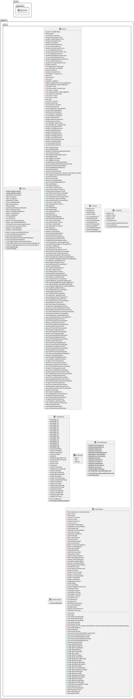
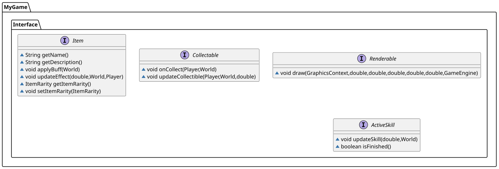

Comprehensive Guide & Technical Reference
SuperDank is an action survival game built with JavaFX. You pilot a mech through an endless battlefield, fighting waves of enemies, leveling up, and building the ultimate weapon loadout. The game features fluid physics-based movement, a roulette-based upgrade system, and scaling difficulty.
| Requirement | Minimum | Recommended |
|---|---|---|
| Java JDK | 24.0.2 | Latest LTS |
| JavaFX SDK | 24.0.1 | 26.0.1 |
| RAM Allocation | 1 GB | 2 GB (-Xms2G -Xmx2G) |
| Resolutions | 1920x1200 | 1920x1200 |
Download Links:
The JAR file is located in SuperDank/build/libs/. Place the JavaFX SDK folder next to the
JAR.
| Action | Primary Key | Alternate Key |
|---|---|---|
| Move Up / Down / Left / Right | W / S / A / D | — |
| Dash / Dodge | SHIFT | RIGHT CLICK |
| Jump | SPACE | — |
| Slash (Skill 1) | LEFT CLICK | J |
| Cross Slash (Skill 2) | E | K |
| Ultimate (Skill 3) | R | L |
| Toggle Mini-Map | TAB | — |
| Aim | Mouse Cursor Position | |
| Action | Primary Key | Alternate Key |
|---|---|---|
| Open Pause Menu | ESC | — |
| Navigate Up | UP ARROW | TAB / K |
| Navigate Down | DOWN ARROW | SHIFT+TAB / J |
| Navigate Right | RIGHT ARROW | TAB / L |
| Navigate Left | LEFT ARROW | SHIFT+TAB / H |
| Apply / Select Option | SPACEBAR / ENTER | LEFT CLICK |
TAB to toggle the minimap. Click the minimap (top-left) to view
the expanded map and your detailed player stats. Click it again or press TAB to close.Stats extracted from Player.java:
| Stat | Base Value | Notes |
|---|---|---|
| Max Health | 3,000 | +10 per level up |
| Max Stamina | 100 | +1 per level up. Regenerates at 10/sec. |
| Max Speed | 500 units/s | Acceleration: 1500, Friction: 600 |
| Dash Speed | 600 units/s | Duration: 0.2s, Cooldown: 0.6s, Cost: 15 STA |
| Jump Speed | 2000 units/s | Gravity: 8000. Cost: 25 STA |
| Regeneration | 2 HP / tick | Tick every 0.2s (= 10 HP/sec) |
| Base Magnet Radius | 150 | Increased by Magnet Ring item |
| EXP to Level 1 | 50 | Scales ×1.3 per level |
| Map Boundary | ±20,000 | Hard wall limit |
| Item Slots | 10 | Max equipment capacity |
| Action | Stamina Cost | Cooldown |
|---|---|---|
| Dash | 15 | 0.6s |
| Jump | 25 | 0.2s |
| Slash (on hit) | 5 | 2.0s base |
| Cross Slash | 60 | 8.0s |
| Ultimate | 100 (full bar) | 60.0s |
Weapons fire automatically. Each can be leveled up to 20 via the roulette system. Stats scale with bonus stats gained per level.
| Weapon | In-Game Name | Base Dmg | Cooldown | Base Crit Rate | Base Crit Dmg | Base Proj | Upgradeable Stats |
|---|---|---|---|---|---|---|---|
| Sword | Swinger | 60 | 1.5s | 0% | 0% | — | Damage, Atk Speed, Size |
| Bow | Bau | 30 | 2.0s | 5% | 50% | 2 | Damage, Atk Speed, Crit Rate, Crit Dmg, Proj Count |
| Boomerang | Spinner | 20 | 3.0s | 5% | 50% | 3 | Damage, Atk Speed, Crit Rate, Crit Dmg, Size, Proj Count |
| Orbit Rocks | Hot Rock | 20 | 1.5s respawn | 0% | 0% | 3 | Damage, Atk Speed, Size, Proj Count |
| Aura | Aura | Tick-based | 0.5s tick | 0% | 0% | — | Damage, Atk Speed, Size |
| Lightning | Shock Collar | 80 | 3.0s | 2% | 30% | 8 chains | Damage, Atk Speed, Crit Rate, Crit Dmg, Proj Count |
| Stat | Base Bonus |
|---|---|
| Damage | +8% |
| Atk Speed | +2% |
| Crit Rate | +3% |
| Crit Dmg | +15% |
| Size | +10% |
| Proj Count | +1 |
| Rarity | Stat Slots |
|---|---|
| Common / Uncommon | 1 |
| Rare / Epic | 2 |
| Legendary / Abysmal | 3 |
| Divine | 5 |
| Skill | Base Damage | Range | Cooldown | Duration | Key | Behavior |
|---|---|---|---|---|---|---|
| Slash | 60 | 700 units | 2.0s | 0.2s | L-Click / J | Forward cone attack. Knocks enemies back 200 units. If airborne, becomes a Jumping Slash instead. |
| Jumping Slash | 80 | 300 units | Shares with Slash | 0.2s | L-Click / J (while airborne) | AoE slam around player. Pushes enemies 300 units. Reduces slash cooldown by 0.01s per hit. |
| Cross Slash | 150 | 300 units | 8.0s | 0.4s | E / K | Cross-shaped AoE. Hits all enemies in radius once. Pushes 100 units. Costs 60 stamina. Cannot be used while jumping. |
| Ultimate | 500 | Screen-wide | 60.0s | 3.5s | R / L | Player rises for 1.5s pulling nearby enemies inward, then slams dealing 500 base damage to ALL enemies. Triggers screen shake. Costs 100 stamina. Grants shield during cast. |
Cores are passive stat modifiers that enhance your mech globally. They are acquired through the roulette system alongside weapons.
| Core | Stat Modified | Base Amount | Type |
|---|---|---|---|
| BiocatalystCore | Regeneration | +2 HP/tick | Flat |
| ChaosCore | All Weapon Bonus | +15% | Multiplier |
| CryptoCore | Coin Multiplier | +100% | Multiplier |
| DataCore | EXP Multiplier | +10% | Multiplier |
| DynamoCore | Max Stamina | +20 | Flat |
| EntropyCore | Luck | +10% | Multiplier |
| FractalCore | Projectile Count (all weapons) | +1 | Flat |
| KineticCore | Movement Speed | +20% | Multiplier |
| MatrixCore | Size (all weapons) | +10% | Multiplier |
| OverClockCore | Cooldown Reduction (all weapons) | +5% | Multiplier |
| OverHeatCore | Crit Damage (all weapons) | +20% | Multiplier |
| PlasmaCore | Damage (all weapons) | +5% | Multiplier |
| ResonanceCore | Attack Speed (all weapons) | +1.5% | Multiplier |
| SiphonCore | Life Steal | +1% | Multiplier |
| SomaticCore | Max Health | +1000 | Flat |
| SurgeCore | Max Overheal | +2000 | Flat |
| VectorCore | Crit Rate (all weapons) | +5% | Multiplier |
| Rarity | Color | Weapon Multiplier | Core Multiplier | Drop Rate (base) |
|---|---|---|---|---|
| Common | Light Gray | ×1.0 | ×1.0 | 40% |
| Uncommon | Lime Green | ×1.2 | ×1.2 | 24% |
| Rare | Dodger Blue | ×1.5 | ×1.5 | 18% |
| Epic | Purple | ×1.8 | ×1.8 | 10% |
| Legendary | Gold | ×2.0 | ×2.2 | 5% |
| Abysmal | Dark Red | ×2.5 | ×2.6 | 2.5% |
| Divine | White | ×2.0 | ×3.0 | 0.5% |
Drop rates are modified by the player's Luck stat (from EntropyCore).
| Enemy | Sprite | Max HP | Speed | Hitbox | Contact Damage | Behavior |
|---|---|---|---|---|---|---|
| Berserker (Base) | Berserker-sprite | 120 | 250 | 20 | On contact | Walks toward the player. Spawns in increasing waves. |
| Assassin (Charger) | Assassin-sprite | 80 | 600 | 20 | On contact | Extremely fast. Charges in a straight line at your position. |
| Blackbeard (Boss) | Blackbeard-sprite | 3,000 | 180 / 1200 (dash) | 35 | 400–500 | Telegraphed attacks: Circle AoE (radius 350, 500 dmg) and Arc sweep (radius 550, 45° cone, 400 dmg). Cooldown decreases with difficulty. |
| Pattern | Telegraph Time | Damage | Radius | Avoidable By |
|---|---|---|---|---|
| Circle AoE (1–3 casts) | 0.8s | 500 | 350 units | Jumping, Dashing, Shield |
| Dash → Arc Sweep | 0.5s dash + 0.2s telegraph | 400 | 550 units, 90° cone | Jumping, Shield, Out-of-range |
| Tier | Color |
|---|---|
| Stock | White |
| Modified | Dodger Blue |
| Prototype | Purple |
| Artifact | Gold |
| Ultimate | Red |
| Level | Stock | Modified | Prototype | Artifact | Ultimate |
|---|---|---|---|---|---|
| 1 | Data Fragment | Adrenal Syringe | Necrotic Heart | Deepest Void | Final Weapon |
| 2 | Engine Overload | Hex Editor | Parasitic Gas | Doomsday | — |
| 3 | Magnet Ring | Magnetic Repulsor | Soul Harvester | Mutated Brain | — |
| 4 | Phantom Drive | Neuro Amplifier | Titanium Armor | — | — |
| 5 | Servo Motor | Tungsten Plating | — | — | — |
| 6 | Banana | — | — | — | — |
| Item | Type | Effect |
|---|---|---|
| Banana | Drop | Restores a large amount of health on pickup. |
| Energy Drink | Drop | Grants temporary buffs: Shield, Speed Boost, or Magnet range increase. |
| Chest | World Object | Contains a random Equipment item. Opens a selection popup. |
| Experience Crystal | Enemy Drop | Grants EXP. Auto-collected within magnet radius. |
Difficulty grows continuously based on time survived:
All enemy HP, speed, and boss cooldowns use this multiplier. Player EXP drops also scale with
difficultyMultiplier^2 / 1.5.
| Time (seconds) | Berserker Spawn Rate | Event |
|---|---|---|
| 0 – 29s | 1 per 0.80s | Game start. Only Berserkers. |
| 30 – 59s | 1 per 0.40s | Spawn rate doubles. |
| 40s+ | — | Charger waves begin (every 6.0s). 3 rows of 30 = 90 Chargers per wave. |
| 60 – 299s | 1 per 0.20s | Spawn rate doubles again. Boss spawns every 60s. |
| 300 - 600s | 1 per 0.10s | Fast spawn rate. Berserker speed = 100 × difficulty. |
| 600s+ | 1 per 0.05s | Maximum spawn rate. Berserker speed = 100 × difficulty. |
Enemies always spawn off-screen at 1.5× the max screen dimension from the player. Chargers are culled if they move more than 4000 units away; Berserkers at 3000 units.
| Enemy | 0–119s | 120–299s | 300s+ |
|---|---|---|---|
| Berserker HP | 120 | 200 | 200 × difficulty |
| Berserker Speed | 250 | 350 | 100 × difficulty |
| Charger HP | 80 | 80 | 120 × difficulty |
| Charger Speed | 600 | 600 | 400 × difficulty |
| Boss HP | 3000 | 3000 + 1000×diff | 3000 + 1000×diff |
| Boss Speed | 180 | 200 × difficulty | 200 × difficulty |
| Boss Cooldown | 1.0s | 1.0 / difficulty | 1.0 / difficulty |
Enemies deal damage when their hitbox touches the player (only while player is on ground):
| Enemy Type | Base Contact Damage | With Difficulty |
|---|---|---|
| Berserker | 50 | 50 × difficultyMultiplier |
| Charger | 60 | 60 × difficultyMultiplier |
| Boss | 100 | 100 × difficultyMultiplier |
Jumping completely avoids contact damage. Dashing reduces it by dashDamageReduction (from Phantom
Drive item). Dodge chance (from Hex Editor) can negate it entirely, showing a "Dodge!" DamageText.
The takeDamageAndEffectPlayer() method also checks for instant-kill chance (from Soul Harvester),
triggering enemy.health = 0 when the random roll passes.
| Projectile | Class | Behavior | Key Stats |
|---|---|---|---|
| Arrow | Arrow.java | Linear travel toward a target enemy. Despawns on hit or off-screen. | 30 base dmg. Can crit. One target per arrow. |
| Boomerang | Boomerang.java | Travels to target, then returns. Hits on both outbound and return paths. | 20 base dmg. Can crit. Size scales hitbox. |
| Rock | Rock.java | Orbits player at radius 350. Respawns 1.5s after being destroyed. | 20 base dmg. No crit. Breaks on enemy contact. |
| LightningEffect | LightningEffect.java | Visual chain drawn between strike points. No collision logic (handled by LightningWeapon). | Visual only after damage is applied. |
| Explosion | Explosion.java | Area burst triggered by Necrotic Heart item on enemy death. | 30 base dmg, 250-unit radius. |
Arrows are linear projectiles fired by the Bow weapon. Here is how they work internally:
| Property | Value | Explanation |
|---|---|---|
| Speed | 1,600 units/s | Arrow travels at fixed speed along its normalized velocity vector. |
| Pierce Count | 4 | Arrow can pass through up to 4 enemies before despawning. Each hit decrements the count. |
| Hitbox | 10 units | Small circular hitbox for precise collision with enemies. |
| Fade Timer | 8.0s | Arrow is removed after 8 seconds even if it still has pierce remaining. |
| Hit tracking | hitEnemies list |
Prevents hitting the same enemy twice on one pass. Cleared when arrow bounces off screen edge. |
Direction calculation (constructor): The arrow computes a normalized direction vector from its
spawn position to the target enemy, then stores it as velocityX / velocityY. The visual rotation angle
is derived with Math.atan2(velocityY, velocityX).
Boundary behavior: When an arrow exits the screen boundary, it bounces by negating its
velocity component (velocityX *= -1) and clears hitEnemies, letting it re-hit
already-struck enemies on the return path.
JavaFX rendering: Arrow uses GraphicsContext.translate() to move the canvas origin to
the arrow position, then gc.rotate(angle) to orient the sprite correctly before calling
gc.drawImage() from a sprite sheet with 30 animation frames (64×64px each).
gachaRarity().JavaFX Implementation: The roulette is built entirely from JavaFX layout nodes. A
StackPane holds a dynamically generated HBox of 50 weapon/core cards built at level-up
time via rouletteDatabase(). The spin animation is a TranslateTransition applied to
the HBox, sliding it so card index 40 stops at center. A PauseTransition then delays
the Accept/Refresh/Skip buttons appearing. The Accept button calls world.upgradeExistWeapon() or
world.addNewWeapon() depending on whether the weapon already exists, then resumes the
AnimationTimer game loop.
| Drop | Drop Chance | Condition |
|---|---|---|
| Experience Crystal | 100% | Every kill. Value scales with difficulty^2. |
| Coin | ~varies | Random 0–14 coins × coinMultiplier per kill. |
| Chest | 0.1% | Berserker kill only. |
| Banana | 1.0% | Berserker kill only. |
| Energy Drink | 1.0% | Berserker kill only. |
| Boss EXP | 100% | 3000 × difficulty. +200 coins. |
EXP value multipliers by time: <240s: ×diff²/1.5 | 240–480s: ×3×diff²/1.5 | 480s+: ×10×diff²/1.5
When collected, grants one of these temporary buffs:
| Effect | Duration | Mechanic |
|---|---|---|
| Shield | Timed (drinkShieldTimer) | Blocks all incoming damage. Shown as cyan aura. |
| Speed Boost | Timed (drinkSpeedTimer) | +100% movement speed, +20% atk speed for all weapons. Shown as yellow aura. |
| Magnet | Timed (drinkMagnetTimer) | Increases EXP collection radius. Shown as magenta aura. |
JavaFX Implementation: The entire game world is drawn onto a single JavaFX Canvas
node managed by GameEngine. Each frame, the GraphicsContext (gc) is
cleared and all Renderable objects are drawn with a camera offset (posX - cameraPosX).
Obstacles use a tiled WritableImage (tileNormal / tileCracked) filled via
gc.fillRect() with an ImagePattern. The minimap is drawn as a small overlay in the
top-right corner of the same canvas: enemy dots are gc.fillOval() calls scaled to minimap
coordinates, and the player is a distinct colored dot. The background is a scrolling animated fire sprite sheet
(fireFrames[]) tiled behind everything.
| State | Trigger | Frame Duration | Frames |
|---|---|---|---|
| Idle | No movement | 0.15s | 6 |
| Run | WASD held | 0.08s | 5 |
| Dash | Shift/RClick | 0.10s | 2 |
| JumpUp | Rising (velZ > 0) | 0.06s | 1 |
| JumpDown | Falling (velZ <= 0) | 0.06s | 1 |
| Skill | Slash active | 0.04s | 3 |
| SkillJump | JumpingSlash active | 0.12s | 1 (with rotation) |
| UltimateUp/Down | Ultimate cast | 0.02s | 1 |
Trail effects are emitted at different rates: Run = 0.2s, Dash/Jump = 0.05s, Skill = 0.03s, SkillJump = 0.01s between trail spawns.
The game rotates through 4 tracks automatically:
JavaFX Implementation: Music uses javafx.scene.media.MediaPlayer for full BGM
tracks (supports seeking, volume, looping). SFX (slash, dash, arrow, aura, etc.) use
javafx.scene.media.AudioClip, which is pre-loaded into memory for zero-latency one-shot playback —
critical for responsive combat feedback. The playlist cycling works by setting
bgmPlayer.setOnEndOfMedia(() -> playNextSong()) on the MediaPlayer. playNextSong()
increments currentSongIndex (wrapping with modulo), creates a new Media from the next
filename, assigns it to bgmPlayer, and calls play(). The entering animation and
ultimate both use dedicated MediaPlayer instances (enteringPlayer,
ultimatePlayer) so they can play over the BGM simultaneously.
Javadoc can be delay on website please be patient.
| Class / Method | Signature | Summary |
|---|---|---|
| Main | start(Stage) |
Builds the scene graph, starts GameEngine, registers key/mouse handlers. |
| Main | triggerPopupLevelUp(GameEngine) |
Pauses game loop, shows roulette UI, wires Accept/Refresh/Skip buttons. |
| Main | gachaRarity(Player) |
Rolls a weighted Rarity for existing-weapon upgrades using player luck. |
| GameEngine | renderGame(double dt) |
Clears canvas, applies screen shake, calls renderList() for all object layers. |
| GameEngine | updateLeftPanelUI() |
Syncs HP/stamina/exp bars and labels; skips if uiNeedsUpdate == false. |
| GameEngine | playNextSong() |
Advances BGM playlist index and starts next MediaPlayer track. |
| World | update(double dt) |
Master tick: runs player, enemies, weapons, skills, items, projectiles, collectables. |
| World | spawnEnemy(int type) |
0=Berserker, 1=Charger wave (90 units), 2=Boss. Spawns off-screen at random angle. |
| World | triggerSlash() / triggerCrossSlash() / triggerUltimate() |
Validate stamina/cooldown then add ActiveSkill to activeSkills list. |
| World | upgradeExistWeapon(Weapon, Rarity) |
Increments level and adds rarity-scaled bonus stats to matching weapon. |
| World | checkCollection(List, double dt) |
Iterates any Collectable list; calls onCollect() when player is in magnet radius. |
| Camera | update(Player) |
Sets posX/posY to player center; GameEngine adds shake offset on top. |
| Controller | playerMovement(Player, World) |
Called every frame; maps stored boolean flags to player dash/jump/skill calls. |
| GameAssets | img(String path) |
Private helper; loads image from resources, returns placeholder on failure. |
| SoundManager | initSounds() |
Static init: loads all AudioClips and MediaPlayers from resource paths. |
| Class | Key Methods |
|---|---|
| Player | update(dt, world) — physics, dash, jump, regen. dash() — 15 STA, 0.6s CD.
jump() — 25 STA. addExperience(amt) — level-up logic.
|
| Enemy | doDamage(player, amt) — applies damage respecting shield/overheal.
takeDamageAndEffectPlayer(player, amt, texts, crit) — takes damage, triggers
lifesteal/instant-kill.
|
| Boss | telegraphAttack(player) — picks circle or dash+arc. attack(dt, player, diff) —
executes the telegraphed pattern. |
| Charger | update(dt) — moves at 600 speed directly toward player direction. |
| DamageText | draw(gc, ...) — floating damage number with fade-out opacity. |
| Class | Key Methods |
|---|---|
| Weapon (abstract) | update(dt, world) — handles cooldown and auto-fire. playerAttack(world) —
abstract attack logic. coreUpgrade(world, bonus) — applies core stat. |
| Sword | playerAttack(world) — elliptical AoE centered on player facing. 60 base dmg. Knockback 200.
|
| Bow | playerAttack(world) — fires arrows at nearest enemies. Sorts by distance via CompareEnemies.
|
| BoomerangWeapon | playerAttack(world) — launches returning projectiles. Pierces and crits. |
| OrbitRock | update(dt, world) — manages orbiting rocks. Respawns broken rocks after 1.5s. |
| Aura | inArea(world) — tick-based AoE damage around player. Radius: 250 base. |
| LightningWeapon | playerAttack(world) — chain lightning. 80 base dmg. Chains up to 8+projCount enemies within
600-unit jumps. |
| Class | Key Methods |
|---|---|
| Slash | updateSkill(dt, world) — forward cone check (0.90 dot product). 60 base dmg. 700 range. |
| CrossSlash | updateSkill(dt, world) — 300-unit radius AoE. 150 base dmg. Hits each enemy once. |
| JumpingSlash | updateSkill(dt, world) — 300-unit radius. 80 base dmg. Reduces slash CD per hit. |
| Ultimate | updateSkill(dt, world) — 3.5s sequence: pull → slam → flash. 500 base dmg to all. |
| Interface | Description |
|---|---|
| Renderable | Any object with draw(gc, camX, camY, w, h, margin, engine). |
| ActiveSkill | Skills with updateSkill(dt, world) and isFinished(). |
| Item | Equipment with getName(), getDescribe(), applyEffect(world). |
| Collectable | Pickup items with collection logic. |
| Enum | Description |
|---|---|
| Rarity | 7-tier weapon/core rarity: Common → Divine. Each has a color, weapon multiplier, and core multiplier. |
| ItemRarity | 5-tier equipment rarity: Stock → Ultimate. Each has a display color. |
This section is derived from uml.puml — the full PlantUML class diagram. Diagrams are inserted
separately.
Diagram A: Engine Layer (Main, GameEngine, World, Camera, Controller, GameAssets)

Diagram B: GameObject Hierarchy — all entities, enemies, projectiles, items and weapons

Diagram C: Interface

All Diagram

Open image in new tab for view.
| Base | Subclasses | Why This Design |
|---|---|---|
GameObject (abstract) |
Player, Enemy, Obstacle, Projectile, Chest, Steak, Experience, EnergyDrink, DamageText | All physical in-world objects share posX, posY, hitbox, push(), and checkCollision(). This avoids code duplication for every entity needing collision and world-space positioning. |
Enemy (extends GameObject) |
Charger, Boss | Enemy holds the common state: health, speed, knockback, animation, and the damageTimer (immunity window). Charger and Boss only override their unique behavior (charge direction, state machine) while reusing all shared combat logic. |
Weapon (abstract) |
Sword, Bow, BoomerangWeapon, OrbitRock, Aura, LightningWeapon, and all 16 Cores | Cores extend Weapon for a clever reason: they reuse the rarity/level system and the roulette mechanism
without needing a separate system. Cores set isCore = true and implement
coreUpgrade() instead of playerAttack().
|
Projectile (abstract, extends GameObject) |
Arrow, Boomerang, Rock, LightningEffect | All projectiles share updateProj(dt, world) and isDone(). The World's update
loop can iterate all projectiles uniformly via the abstract type, removing if-else chains per projectile
type. |
Inheritance is used where subclasses are genuinely a kind of the parent — not just for convenience:
| Base | Subclasses | Why This Design |
|---|---|---|
GameObject (abstract) |
Player, Enemy, Obstacle, Projectile, Chest, Steak, Experience, EnergyDrink, DamageText | All physical in-world objects share posX, posY, hitbox, push(), and checkCollision(). This eliminates duplication across every entity that needs collision and world-space positioning. |
Enemy (extends GameObject) |
Charger, Boss | Enemy holds shared state: health, speed, knockback, animation, and damageTimer (immunity window). Charger and Boss override only their unique behavior while reusing all combat logic. |
Weapon (abstract) |
Sword, Bow, BoomerangWeapon, OrbitRock, Aura, LightningWeapon, and all 17 Cores | Cores extend Weapon to reuse the rarity/level system and roulette mechanism. Cores set
isCore=true and implement coreUpgrade() instead of playerAttack() —
one unified pool for both weapons and cores.
|
Projectile (abstract, extends GameObject) |
Arrow, Boomerang, Rock, LightningEffect | All projectiles share updateProj(dt, world) and isDone(). World iterates
List<Projectile> uniformly with no type-specific branching.
|
Why this is correct: Each subclass satisfies the Liskov Substitution Principle — a
Boss can be treated as an Enemy everywhere in World, and a Charger is
stored in the same List<Enemy> as a Boss. The game loop never needs to know the
concrete type unless accessing type-specific behaviour (instanceof Boss for state machine updates).
| Interface | Implemented By | Why Used & How It Connects |
|---|---|---|
Renderable |
All GameObjects, Weapon, ActiveSkill subclasses | GameEngine's renderList(List<? extends Renderable>, gc, ...) draws any object without
knowing its concrete type. Adding a new entity only requires implementing draw() — no changes
to the render loop. |
ActiveSkill (extends Renderable) |
Slash, JumpingSlash, CrossSlash, Ultimate | Skills are temporary objects. World calls updateSkill() each frame and removes them when
isFinished() is true. Because ActiveSkill extends Renderable, the same render loop draws skills
alongside enemies and projectiles — no special case.
|
Collectable |
Chest, Steak, EnergyDrink, Experience | Any pickup implements onCollect(Player, World) and
updateCollectible(Player, World, dt). World calls checkCollection() on all
collectable lists uniformly — one method handles all pickup types.
|
Item |
All 18 Equipment classes | Equipment is stored as List<Item>. World calls
item.updateEffect(dt, world, player) every frame for all equipped items without knowing what
each item does. Adding a new item only requires a new class implementing Item — nothing else changes.
|
Why interfaces over abstract classes here: Equipment items have no shared state — each has completely different timers and logic. An interface enforces the contract without forcing a false hierarchy.
The project uses both subtype polymorphism (runtime dispatch) and parametric polymorphism (generics):
| Location | Polymorphism Type | Example |
|---|---|---|
| World render loop | Subtype (Renderable) | renderList(List<? extends Renderable>) calls draw() on enemies,
projectiles, skills, items — all in one loop. |
| World update loop | Subtype (Enemy) | for (Enemy e : enemies) — Boss and Charger both update via their overridden
update() without if/else chains.
|
| Skill dispatch | Subtype (ActiveSkill) | skill.updateSkill(dt, world) — Slash, CrossSlash, JumpingSlash, and Ultimate each execute
their own logic through the same interface call. |
| Weapon firing | Subtype (Weapon abstract) | weapon.update(dt, world) calls the abstract playerAttack(world) which dispatches
to Sword, Bow, Aura, etc. each with different attack geometry. |
| Collectable pickup | Subtype (Collectable) | checkCollection(List<? extends Collectable>) — one method handles Chest, Steak,
EnergyDrink, and Experience pickup logic. |
| Core vs Weapon | Conditional dispatch | if (weapon.isCore()) selects between coreUpgrade() and
upgradeExistWeapon() — minimal branching at the point where types actually diverge.
|
Access modifiers in SuperDank follow standard encapsulation principles:
| Modifier | Where Used | Reason |
|---|---|---|
private |
Most fields in all classes (e.g. Player's velocityX, Enemy's health) | Internal state is never accessible directly. All reads/writes go through getters/setters, allowing invariants to be enforced (e.g. health can't go below 0 if clamped in the setter). |
protected |
GameObject fields (posX, posY, hitbox), Enemy fields (health, speed, faceToX), Weapon fields (cooldown, bonusDamage, etc.) | Subclasses (Charger, Boss, Sword, Bow) need direct access to parent state for performance-critical per-frame updates, avoiding getter overhead in the game loop while still blocking external access. |
public |
All interface methods, getters/setters, World API methods | Cross-system communication (e.g. skills accessing world.getEnemies(), items calling
player.setMaxHealth()) requires public visibility.
|
static |
SoundManager fields, Experience pool, ItemManager methods, SCREEN_WIDTH/HEIGHT | Shared global resources and constants. SoundManager is static because there is exactly one audio system. Experience pool is static for reuse across all World instances. SCREEN_WIDTH/HEIGHT are referenced from multiple packages without instantiation. |
The architecture follows a clear layered model where each layer only depends on the layer below it:
| Layer | Classes | Depends On |
|---|---|---|
| Entry / UI | Main (JavaFX Application), GameEngine | World, Controller, Camera, GameAssets |
| Game State | World | Player, Enemy, Weapon, Projectile, Item, Skill interfaces |
| Game Entities | Player, Enemy, Boss, Charger, Weapon subclasses, Skill subclasses | GameObject, interfaces (Renderable, ActiveSkill) |
| Projectiles & Effects | Arrow, Boomerang, Rock, LightningEffect, Explosion | Projectile (abstract), World (for collision/damage) |
| Items & Collectables | Equipment classes, Steak, EnergyDrink, Chest, Experience | Item interface, Collectable interface, Player, World |
| Infrastructure | GameAssets, SoundManager, Camera, Controller, ItemManager | JavaFX APIs only |
Key decoupling points:
levelUpCallBack / gameOverCallBack as Runnables — it never imports
Main or GameEngine, so game logic is fully decoupled from the UI framework.GameEngine engine as a parameter — they pull their images via
engine.getArrowImage() etc., avoiding static asset references scattered through game classes.
| Interface | Implemented By | Why Used |
|---|---|---|
Renderable |
GameObject (and all subclasses), Weapon, ActiveSkill subclasses | Decouples rendering from game logic. GameEngine's renderList() accepts
List<? extends Renderable> and draws anything without knowing its concrete type. This is
what allows one render loop to handle enemies, projectiles, items, and effects.
|
ActiveSkill (extends Renderable) |
Slash, JumpingSlash, CrossSlash, Ultimate | Skills are short-lived objects added to world.activeSkills and removed when
isFinished() returns true. Extending Renderable means skills draw themselves during the same
render pass as everything else — no special case required.
|
Collectable |
Chest, Steak, EnergyDrink, Experience | Any object the player can walk over and collect implements onCollect(Player, World) and
updateCollectible(Player, World, dt). World calls checkCollection() on all
collectable lists, keeping the pickup logic in one unified place.
|
Item |
All 18 Equipment classes | Equipment items define: getName(), getDescription(),
applyBuff(World) (one-time on equip), updateEffect(dt, World, Player) (per-frame
effect), and getItemRarity(). This interface allows World to iterate itemList and
call updateEffect() uniformly each tick.
|
This is one of the most important design decisions in the project. Cores and Weapons share the same class hierarchy:
The WeaponType enum serves two purposes:
| Weapon Role | Core Role |
|---|---|
| SWORD, BOW, BOOMERANG, ROCKS, AURA, LIGHTNING — identify weapon slot | REGEN, LIFESTEAL, CHOAS, COIN, EXP, STAMINA, LUCK, PROJCOUNT, SIZE, COOLDOWN, CRITDMG, DAMAGE, ATKSPEED, CRITRATE, OVERHEAL, HEALTH, MOVEMENTSPD — identify what stat the core modifies |
This allows getWeaponLevel(WeaponType) in World to check if a weapon of any type (including a
core) is already equipped, enabling proper deduplication in the roulette output.
The Boss uses an explicit state machine via the BossState enum, which is the correct pattern for
complex AI:
| State | Description | Transitions To |
|---|---|---|
| ACTIVE | Normal movement toward player. Selects next attack after cooldown. | TELEGRAPH_CIRCLE or DASHING |
| TELEGRAPH_CIRCLE | Shows warning indicator at player position. Player has time to dodge. | ACTIVE (after attack resolves) |
| DASHING | Boss dashes at 1200 speed toward player position. | TELEGRAPH_ARC |
| TELEGRAPH_ARC | Shows arc/cone warning after dash. Player must jump or run. | ACTIVE |
| TELEGRAPH_AIR | (Reserved) Aerial attack state for future use. | — |
| TELEGRAPH_LINE | (Reserved) Line-based attack for future use. | — |
Using an enum state machine avoids boolean spaghetti. Each state has a clear entry and exit, and
stateTimer controls how long the boss remains in each state before transitioning.
Player animations are driven by the MovementState enum, with each state storing its own frame
metadata:
| Field | Purpose |
|---|---|
checkSetFrame |
The frame index to force the animation to when entering this state (prevents mid-sequence glitches). |
frameDuration |
How long (in seconds) each animation frame lasts for this state. |
maxFrames |
Total number of sprite frames in this state's animation strip. |
This design means changing an animation only requires updating the enum constant — no hard-coded frame counts scattered through the Player update method.
The Experience class uses a static object pool pattern — one of the most important performance
optimizations in the project:
Why this matters: In later game stages, hundreds of experience crystals can be created and destroyed per second. Without pooling, the Java garbage collector would create pauses every few seconds (GC pauses). The pool eliminates allocation churn by reusing objects, which is critical for a smooth 120fps experience.
World is the central state container — almost every method in every system takes World world as a
parameter. This is intentional:
world.getEnemies() to find targets.world.getPlayer() to apply buffs.world.getArrows() / world.getBoomerangs() to register hits.world.getBlackHoles() or world.triggerScreenShake().World also fires callbacks (levelUpCallBack, gameOverCallBack) back to the JavaFX UI
layer (Main/GameEngine) without directly importing them — keeping game logic decoupled from the UI framework.
GameEngine bridges the JavaFX scene graph and the game world:
| Responsibility | Implementation |
|---|---|
| Game loop | AnimationTimer loop — calls renderGame(dt) every frame |
| Asset distribution | Holds GameAssets assets and exposes individual getters so all Renderable objects can access
images without static fields |
| UI sync | updateLeftPanelUI() updates health/stamina/exp bars, labels only when
world.uiNeedsUpdate == true to avoid unnecessary JavaFX node updates
|
| Trail system | Maintains List<PlayerTrail> with opacity decay — pure data, rendered by the engine each
frame |
| BGM | Playlist of 4 songs cycled via playNextSong() using MediaPlayer's
setOnEndOfMedia callback
|
ItemManager is a pure static factory class with two methods:
This isolates all item-selection logic from the World and Main classes. Adding new items only requires updating ItemManager — nothing else needs to change.
Controller decouples raw JavaFX input events from player behavior:
Scene.setOnKeyPressed/Released and setOnMousePressed/Released.playerMovement(Player, World) is called each frame, translating these flags into actual Player
calls (dash(), jump(), world.triggerSlash(), etc.).CompareEnemies is a specialized sorting helper used by Bow and LightningWeapon to find the closest
enemies:
Using a dedicated comparator class rather than an anonymous lambda makes the sorting logic reusable across multiple weapons and keeps weapon code clean.
Based on the UML, the correct interface method is applyBuff(World), not applyEffect()
as previously documented. The full Item interface contract is:
| Method | When Called | Purpose |
|---|---|---|
getName() |
UI display | Returns item display name |
getDescription() |
Chest popup UI | Returns effect description text |
applyBuff(World) |
Once on equip via world.addItem() |
Applies permanent stat change to player |
updateEffect(dt, World, Player) |
Every game frame | Handles timer-based or continuous effects (e.g., Necrotic Heart, Parasitic Gas) |
getItemRarity() |
UI display | Returns rarity for color-coding in chest popup |
SuperDank — Game still in active development. Generated from source code and UML inspection.